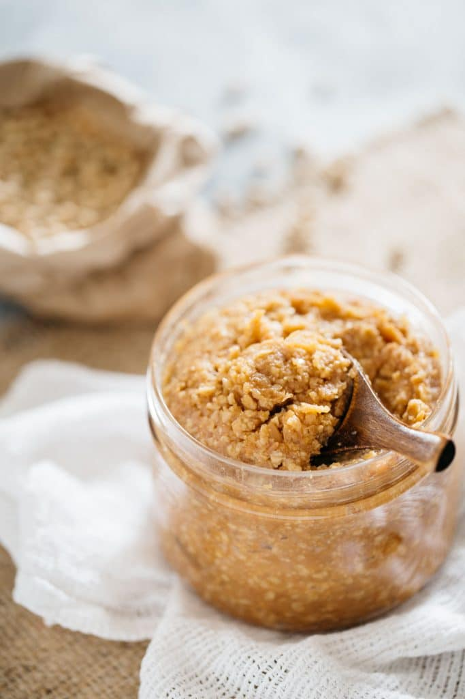

This recipe takes 6 months to make
Miso is traditionally soy beans that are innoculated with koji, a specific fungus that break down the starches into different polysaccharides among other byproducts tamari is released from the beans during fermentation.